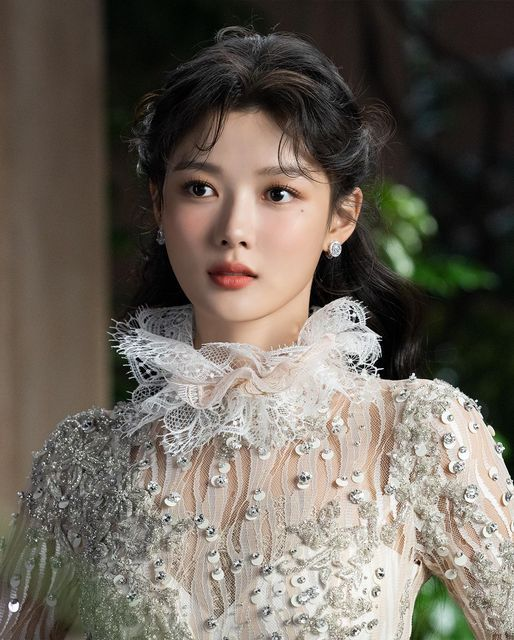

|  | |
| Korean Name | 김유정 |
| Born | September 22,1999(age 24) Senongdong District, Seoul, South Korea |
| Parents | Mok Seon Mi, Kim Sang Pae |
| Siblings | Kim Yeon Jung, Kim Bu Gun |
| Height | 1.64 m |
| Education | Geoyang High School of Arts |
| Occupation | Actress |
| Year Active | 2003-present |
| Agent | Awesome ENT |
Kim Yoo-jung is a South Korean actress. She debuted as a model for a confectionery brand at the age of four.After her acting debut in 2003, she became one of the most in-demand child actresses in Korea.She took on her first leading role in historical romance drama Love in the Moonlight (2016) and starred in romantic comedy film Because I Love You (2017),television drama Clean with Passion for Now (2018), Backstreet Rookie (2020), mystery thriller film The 8th Night (2021),historical fantasy romance drama Lovers of the Red Sky (2021), and teen romance film 20th Century Girl (2022) and fantasy romance My Demon (2023-2024). Kim has been nicknamed "Nation's Little Sister" after playing various child roles and "Sageuk fairy" after taking roles in several acclaimed historical dramas in her career.She also gained the nicknames"Nation's First Love" and "Global First Love" following herwell-loved performance in 20th Century Girl.In 2017, sheranked 8th on Forbes Korea Power Celebrity list,the youngest to be included in the Top 10 at the age of 17.
After Kim's acting debut when she was 4, she quickly became one of the most in-demand child actresses in Korea. In 2008, she received her first acting award as "Best Child Actress" for action-adventure series Iljimae and historical drama Painter of the Wind.Grudge: The Revolt of Gumiho (2010) marked Kim's first major role that wasn't the childhood counterpart of the female protagonis.She rose to popularity in 2012 when she starred in the fantasy-period drama Moon Embracing the Sun.In 2014, Kim's performance as a teenage bully in Thread of Lies drew critical acclaim and she was nominated for the Best New Actress in Blue Dragon Film Awards.In 2015, she starred in the television series Angry Mom which tackled bullying and school violence.In August 2016, Kim starred in her first adult leading role in the youth historical drama Love in the Moonlight as Hong Ra-on - a girl who was raised as a boy and eventually became a eunuch of Crown Prince of Joseon, played by Park Bo-gum.In 2018, Kim starred in the romantic-comedy drama Clean with Passion for Now, based on the webtoon of the same name.In 2020, Kim was cast in the romantic-comedy drama, Backstreet Rookie, alongside Ji Chang-wook, based on a webtoon ofthe same name and played the role of a former high school troublemaker who becomes a part-time employee at a convenience store.During the 2020 SBS Drama Awards held on December 31, 2020, Kim was chosen to be the main host together with Shin Dong-yup.In 2022, she appeared in the Netflix film 20th Century Girl playing the title role as 17-year-old Na Bo-ra in 1999.Kim made her theatrical stage debut in January 2023, she was cast in the upcoming SBS television series My Demon where she portrayed Do Do-hee, a chaebol heiress.